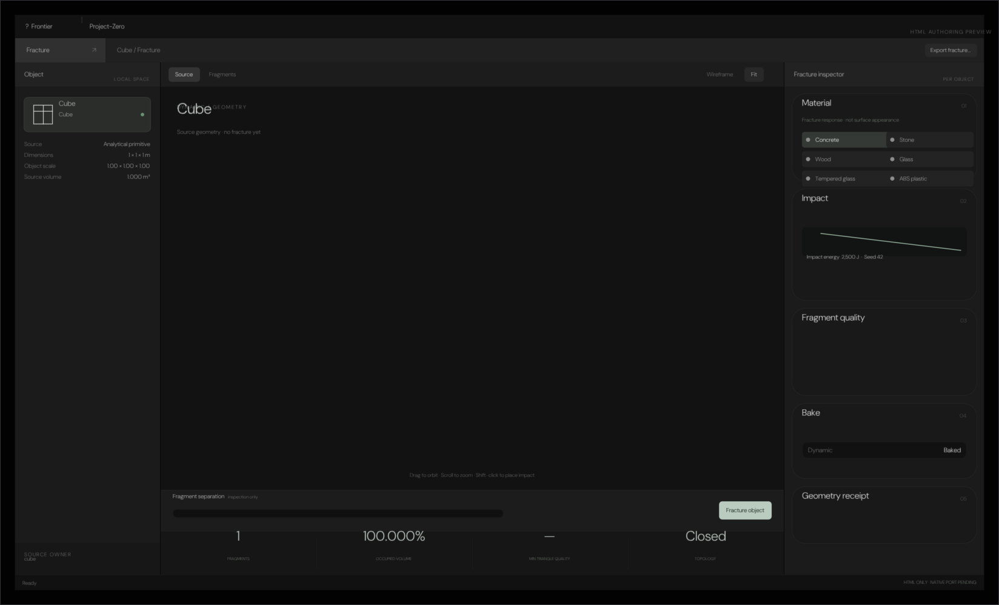
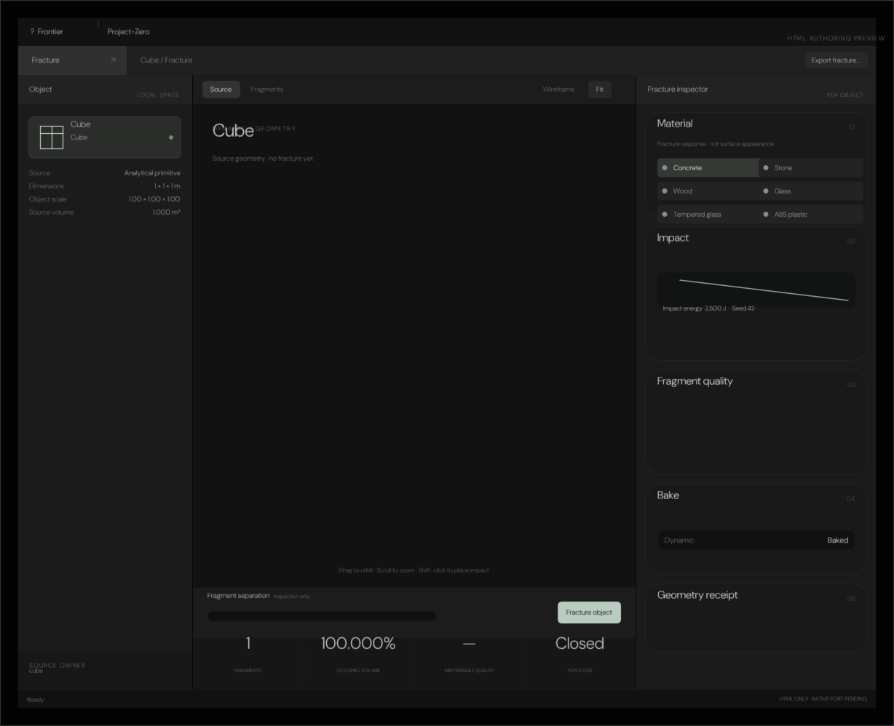
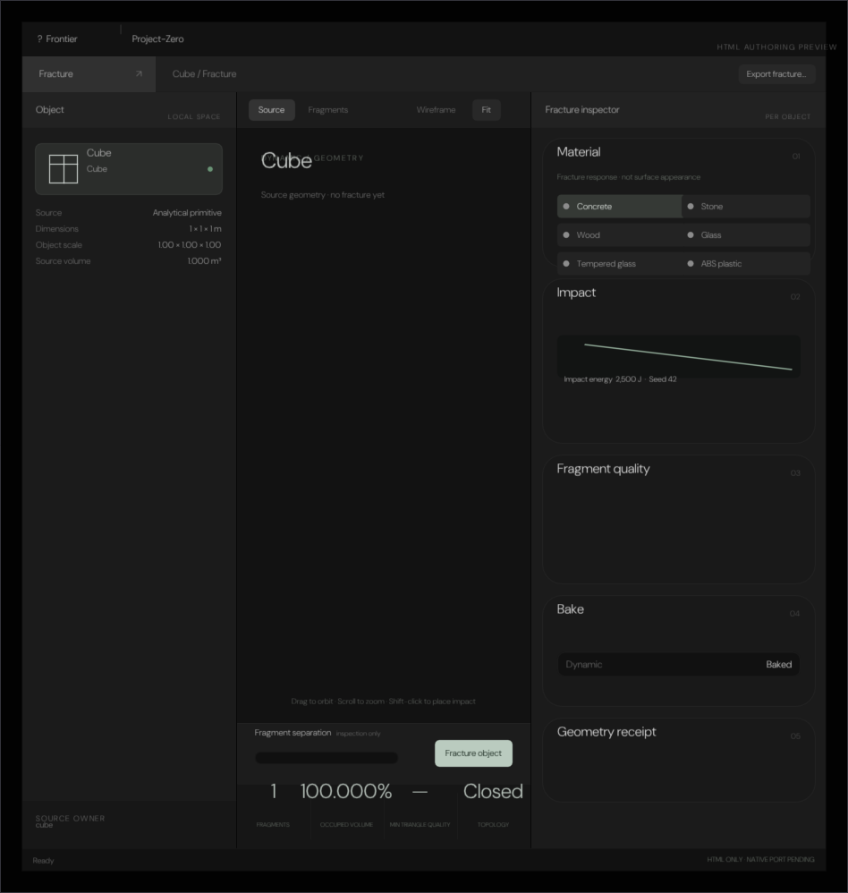
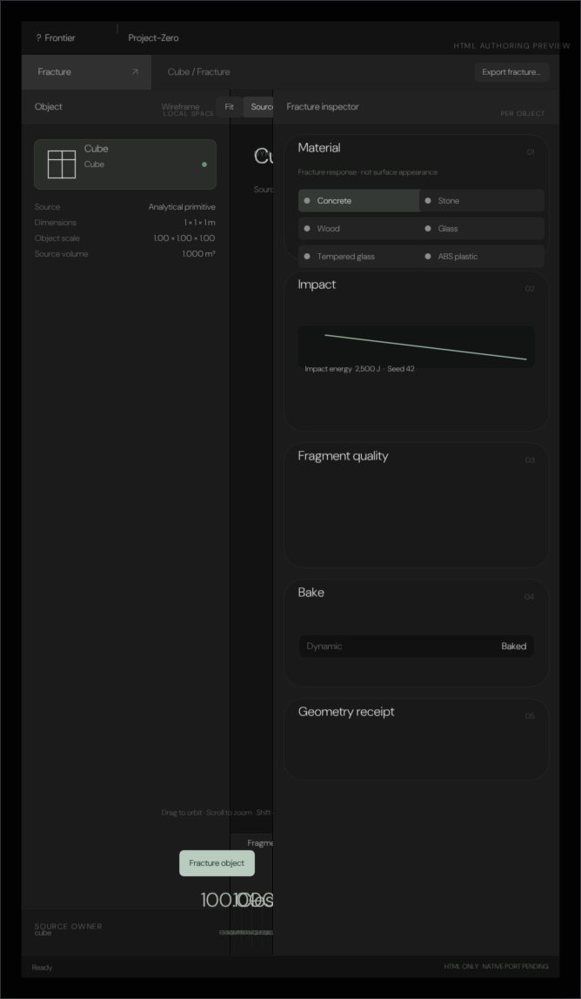

Every pixel below came out of a real ImGui draw list, rasterised on the CPU and written to PNG by
Exhibits/Workbench/FractureEditor/NativeFractureEditor.cpp. Nothing here is a mock-up.
The reference is the standalone authoring review at
Experimental/FractureEditor/index.html — a built 788 KB bundle whose
FracturePanel.css (14 461 B) is inlined in its <style>,
FracturePanel.js (25 953 B) and FractureStructure.js (22 026 B) in its
script, built by Experimental/FractureEditor/Build.mjs. In the host editor it is opened
from the per-object fracture card's ↗ and from the object context menu, per-object and not a global
gallery.
This is a chrome port: titlebar, workspace bar, the three-column workspace
(240 px · 1fr · 330 px with a 1 px gap), the five inspector cards, the
viewport placeholder and the 26 px statusbar. The Three.js viewport and the fracture
simulation are a dark placeholder — the port does not claim to run the orbit or the fracture solve on the CPU.
The checks are the CSS box model worked through by hand: titlebar 39 px on
#121212, workspace bar 40 px on #202020 with its
#303030 tab, pane headings 39 px on #222, the
#1b1b1b side panels, the 240 px / 330 px tracks, card
22 px radius, the #191919/#ffffff0b cards and the
#bacbbf/#17271d primary. BundleParity would fail if any of those literals
drifted from the shipped <style>.
Executed, not illustrated

Titlebar 39 px, workspace bar 40 px, left panel 240 px, centre 1028 px, inspector 330 px, gaps 1 px — the bundle's own grid.

The same three columns, the viewport squeezed but still the whole chrome: target, viewport, inspector and statusbar.

At 900 px the centre is 328 px; the stylesheet keeps all three columns until the stacking breakpoint.

The native tall capture: the same chrome, verified at a phone width. The Three.js canvas is intentionally dark.